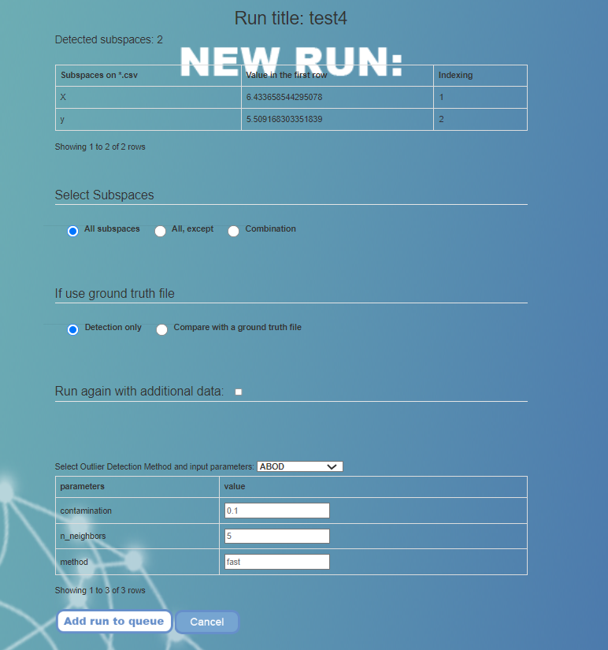
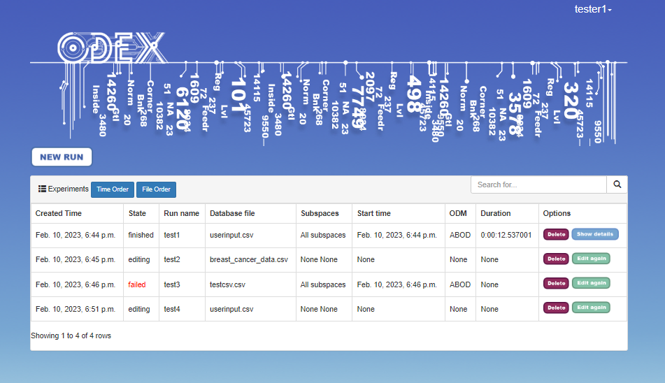

Method at a glance
How it works
- 01Load dataUpload tabular CSV data and, optionally, a separate ground-truth file.
- 02Configure a runChoose feature subspaces, an outlier-detection method, and its parameters.
- 03Execute and inspectQueue the experiment, review scores and plots, download results, and reuse the configuration.
Project workflow schematic.
Why subspaces matter
An observation that looks ordinary in the full feature space may become unusual when a subset of dimensions is examined. Odex was designed as an experimental framework for studying the detection and generation of such outlying data. Instead of centering on one fixed benchmark dataset, the application accepts user-supplied CSV tables and allows experiments on different feature subspaces.
The framework exposes approximately 30 PyOD detection methods through a common interface. Users can select an algorithm and inspect its available hyperparameters without rewriting an experiment script. The retained implementation screenshots include an ABOD run as an example.
Application architecture
The application follows Django’s model–view–template pattern: models and the ORM represent persistent state, views implement the interaction logic, and HTML templates display forms and results. User management and experiment management are separated into modules. The implementation documentation specifies MySQL, accessed through PyMySQL or mysqlclient.
Runs move through states such as editing, pending, finished, and failed. Configuration pages derive valid subspace choices from the uploaded table and display the selected detector’s parameters. The frontend uses HTML, CSS, JavaScript, and Bootstrap, with dynamic parameter and form behavior.


Inspecting an experiment
The results interface records the selected data, feature subspaces, method, parameters, and detected outliers. Where a ground-truth file is supplied, it can show confusion counts, precision, recall, accuracy, and ROC curves. The experiment workflow also supports adding generated data, comparing outcomes, and downloading results as CSV.
I contributed as a member of the software-development team. The design and implementation documents cover interface design, framework integration, and the practical work of connecting browser forms to the Django backend.
Project visuals


Based on the team’s January 2023 design document, February 2023 implementation document, and retained experiment-support code. Team members: Ao Zuo, Christoph Usbeck, Daonan Zhang, Haoliang Huang, and Yuqi Cao.